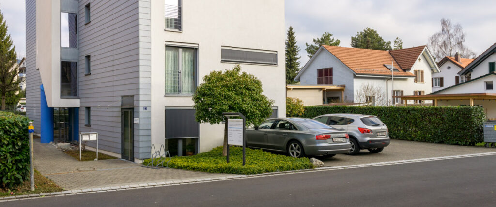
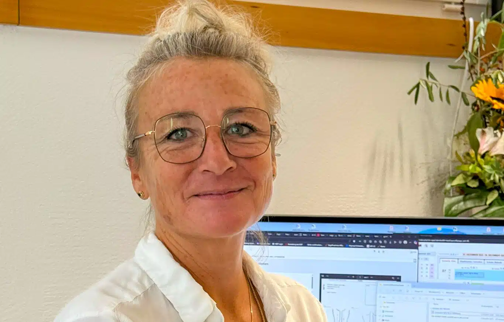

Dr. med. Hilde Berwarth hat sich auf die Diagnostik und Behandlung von Venenleiden (Krampfadern) spezialisiert.
Als Venenspezialist verfügt Dr. Berwarth über langjährige, chirurgische Erfahrung in leitenden Positionen und ist in der modernen Phlebologie (Venenheilkunde) seit mehr als 20 Jahren tätig. Als Chirurgin und Phlebologin kann sie das gesamte Spektrum von Venen-Therapien aus einer Hand anbieten, von der Voruntersuchung über die Therapie bis hin zur Nachbetreuung.
Im Mittelpunkt stehen dabei die modernen, Endovenösen Verfahren, die in Lokalanästhesie schmerzarm und ambulant im Venenzentrum durchgeführt werden können. Die Arbeitsunfähigkeit besteht meist nur für wenige Tage.
Sind klassische, operative Verfahren (Chirurgische Therapie) zum Krampfadern entfernen indiziert, werden diese teilstationär oder stationär in Partnerkliniken durchgeführt.
Zentralstrasse 21
8623 Wetzikon
044 552 30 00
ÖV: vom HB Wetzikon mit Bus 850, 851 bis Haltestelle Kempten Kreuzackerstrasse
4 Parkplätze stehen Ihnen direkt vor der Praxis zur Verfügung. Die Praxis liegt ebenerdig und ist rollstuhlgerecht.

MPA

MPA
Wählen Sie ganz einfach Ihren Wunschtermin. Wir bestätigen die Buchung sobald wie möglich per SMS.